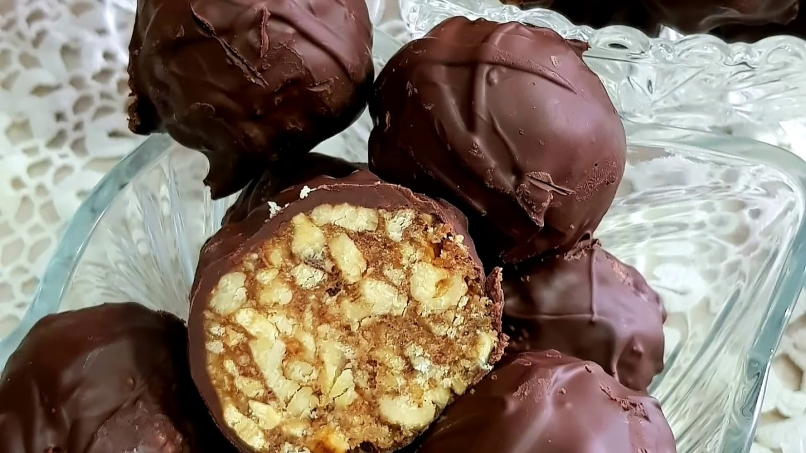
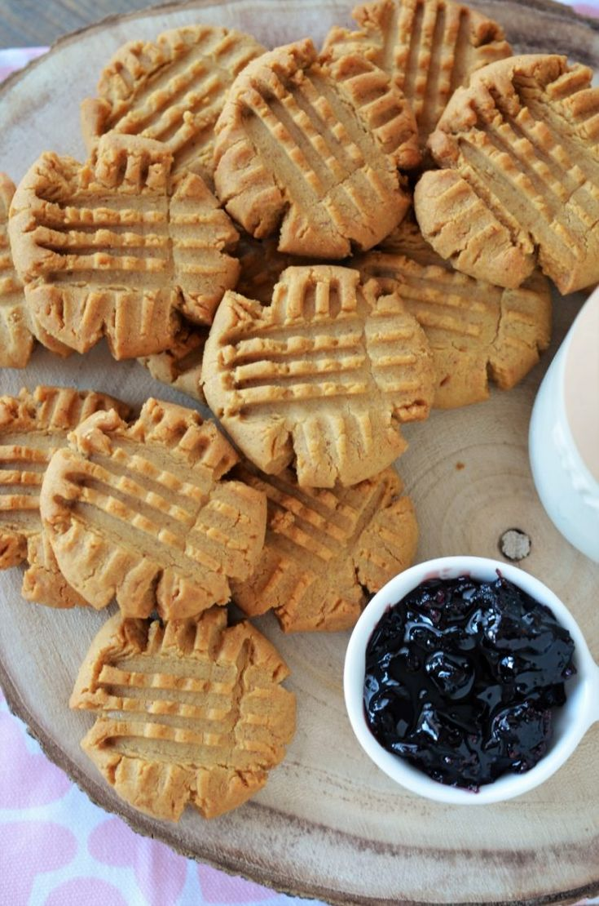
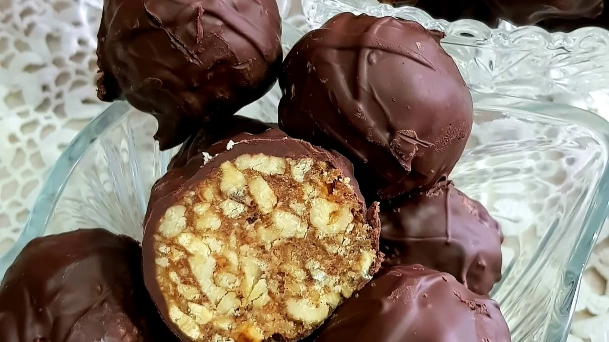
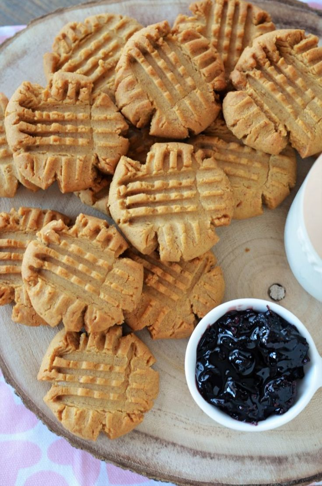

Poze : pâine, bagheta, cină, alimente, carbohidrați, unt, farfurie, maia, bucătărie, ingredient, produse de patiserie, coacere, produse alimentare cu degetul, brutărie, gustare 4032x3024 - c987mdotcom - 1590931 - Poze frumoase - PxHere
2021.03.24 11:28
We use cookies and other technologies on this website to enhance your user experience. Read more Privacy Policy . I Agree Română English Español Čeština Deutsch 日本語 한국어 简体中文 Русский Dansk Français Indonesia Italiano Magyar Nederlands Norsk Polski Português Română Slovenčina Suomi Svenska Türkçe Việt ไทย Български Ελληνική Inscrie Logare Contribuiți la fotografii Fotografi Aparate foto Etichete colecţii de Licență Serviciu FAQ Termen Contact Poze noi Fotografii populare Întâmplător
Poze : pâine, bagheta, cină, alimente, carbohidrați, unt, farfurie, maia, bucătărie, ingredient, produse de patiserie, coacere, produse alimentare cu degetul, brutărie, gustare 4032x3024
Public Domain ×Spune mulțumiri c987mdotcom
Creatorii noștri adoră să audă de tine și să vadă cum le-ai folosit fotografiile. Afișați-vă aprecierile prin donarea, twittearea, facebook-ul și următoarele! Twitter Instagram AcțiuneSetați un link înapoi la această fotografie. Puteți utiliza următorul text
Fotografie după c987mdotcom formular PxHere Copiere × 2 2 Descărcare gratuită original Raport Etichete Editați | × pâine bagheta cină alimente carbohidrați unt farfurie maia bucătărie ingredient produse de patiserie coacere produse alimentare cu degetul brutărie gustare gustare PozePhotos for your website/blog
Copy Copy Copy DescriereHome made baguette
Liber de înaltă rezoluție fotografia pâine, bagheta, cină, alimente, carbohidrați, unt, farfurie, maia, bucătărie, ingredient, produse de patiserie, coacere, produse alimentare cu degetul, brutărie, gustare, gustare
@c987mdotcom, luate iPhone 6s 05/24 2019 Imaginea luată cu 5.0mm, f/2.2s, 1/33s, ISO 160
Imaginea este eliberat gratuit a drepturilor de autor sub Creative Commons CC0.
Puteti descarca, modifica, distribui, și să le utilizeze drepturi de autor gratuite pentru orice doriți, chiar și în aplicații comerciale. De atribuire nu este necesară.
Imagini similarealimente, pâine, bagheta, unt, cină, gustare, vin, sticlă, restaurant, masă, băutură, pahar de vin, roșii, incepator, centrepiece, unt de tomate
farfurie, masă, alimente, coacere, bucătărie, pâine, brutărie, bagheta, cină, produse de patiserie, greacă, Mediterana, mic dejun, desert, Grecia, ciabatta, produse alimentare greacă, familie iarbă
farfurie, masă, alimente, bucătărie, pâine, bagheta, cină, produse de patiserie, rustic, gătire, legume şi fructe, proaspăt, masa de pranz, delicios, de casă, brânză, nutriție, gustos, cașcaval, porumb pe știulete, gustări, caserole
rustic, farfurie, masă, alimente, legume şi fructe, proaspăt, mic dejun, masa de pranz, delicios, pâine, brânză, bagheta, cină, gustos, masa, plantă, lemn, alb, fruct, farfurie, Două, sănătos, carne, felie, sandwich, salată verde, de lemn, simplu, șuncă, simplitate, organic, uşor, planta cu flori, teren de plante
alb, rustic, farfurie, masă, alimente, legume şi fructe, farfurie, proaspăt, mic dejun, sănătos, carne, masa de pranz, delicios, pâine, felie, sandwich, salată verde, brânză, bagheta, cină, gustos, simplu, șuncă, simplitate, organic, uşor, cursor, sandwich cu mic dejun, sendvis cu sunca si branza
masa, alb, sticlă, restaurant, farfurie, masă, alimente, legume şi fructe, farfurie, băutură, mic dejun, sănătos, masa de pranz, delicios, pâine, bagheta, cină, gustare, apă, furculiţă, tacâmuri, salată, verde, avocado, mânca, rachetă, bucătar, ochelari de soare, instagram, curte, local, porţelan, acoperi, Frisch, gastronomie, han, mergem afara, tabelul gedeckter, salată de vară, fata de masa, sens, saltatteller, portocaliu file
masa, alb, restaurant, rustic, farfurie, masă, alimente, verde, Mediterana, gătire, legume şi fructe, proaspăt, mic dejun, sănătos, gustare, masa de pranz, bucătărie, delicios, pâine, brânză, bagheta, cină, gustos, incepator, gustare, sens, piper, condiment, roșu, usturoi, vegetal, gurmand, varietate, busuioc, roșie, asezonare, diferit, Canape, şase, ulei, ierburi, Italiană, oliv, paprika, asortat, ingrediente, pătrunjel, aperitiv, Bruschetta, hors d oeuvre, antipasti, Pincho
alb, farfurie, masă, alimente, ingredient, proaspăt, mic dejun, coacere, bucătărie, de casă, pâine, brutărie, bagheta, nutriție, cină, ciabatta, produse de patiserie, familie iarbă, grâu, natural, bucătărie, agricultură, patiserie, aluat, coace, tradiţional, făină
cometariu toate comentariile(0)c987mdotcom / 6 imagini
https://pxhere.com/ro/photogra...
Urma 2 2CC0 Domeniu public
Gratuit pentru uz personal și comercial
Nu este necesară atribuirea Află mai multe
Descărcare gratuită original Popular Android IOS Original Size 2560x1440 1920x1200 1920x1080 1680x1050 1600x900 1440x900 1366x768 1280x1024 1280x900 1024x768 800x600 720x1280 320x480 480x800 360x640 800x1280 720x1280 540x960 480x854 480x800 360x640 2248x2248 1280x2120 950x1534 840x1336 840x1160 1224x1224 Informații EXIF iPhone 6s iPhone 6s back camera 4.15mm f/2.2 5.0mm· f/2.2s· 1/33s· ISO 160 Rezoluţie4032x3024
a încărcat05/24/2019
Vizualizări65
Download-uri18
Culoare Tag-uri fierbinți voiaj artă animale vertebrate frunze animale sălbatice material Reper nisip galben mamifer Zona montană râu Alb și negru ecosistem flori sălbatice persoană arc lac inflori lemn platou peisaj urban pădure teren plajă lumina soarelui floră drum floare legume şi fructeRaportează această imagine
×Adăugați o fotografie Tag-uri
×Adăugați o imagine la colecții
× Închide + CreaAboneaza-te pentru a obține 40 de fotografii exclusive
Și de a primi un buletin informativ lunar cu cele mai bune imaginile noastre de înaltă calitate.
Subscrie Urmează-ne Fotografi Aparate foto colecţii de Etichete PxHere Licență Serviciu FAQ Termen Contact Link-uri Fotografi Etichete colecţii de Minecraft apk APK Market Popular animal stradă Munte deal Etichete mare culoare copac lac PxHere Fotografii populare zori de zi material lumina soarelui cer- Perdele scurte Bucatarie - eMAG.ro
- Convertor unitati masura Bucatarie | Untdelemn de la Bunica
- Cu Medi in bucatarie
- Perdele | FAVI.ro
- Poze : pâine, bagheta, cină, alimente, carbohidrați, unt ...
- Cum se face GHEE | Bucatarie Indiana Vegetariana
- Crumble cu mere - retete de prajituri - Retete Practice
- Malay Roti – Lipii fine si moi cu Unt | Bucatarie Indiana ...
- Reţetă Fursecuri fragede cu unt - Arome în bucătărie
- Perdele bucătărie | FAVI.ro
- Perdele scurte Bucatarie - eMAG.ro
150 g unt la temperatura camerei. 100 g zahar pudra. 6 oua . 150 g ciocolata amaruie. 1 lingura cacao. 2 pliculețe zahar vanilat. 75 g zahar tos. 150 g faina. o priza sare. Mai avem nevoie. unt pentru uns tava
- Convertor unitati masura Bucatarie | Untdelemn de la Bunica
100 gr unt moale, la temperatura camerei 3-4 linguri lapte rece 1 lingurita sare aprox 150 ml apa. 1 cana = 350 ml. METODA Faceti un aluat fin si moale din fainuri + sare + lapte + 2 linguri unt moale (nu topit !) + apa. Turnati apa cate putin, nu toata deodata. Cantitatea de apa folosita depinde mult de tipul de faina pe care il aveti.
- Cu Medi in bucatarie
o lingură de unt; sare, piper; Mod de preparare dorada la cuptor cu sparanghel tras în unt. Peştele se curăţă de măruntaie (asta dacă nu aveţi noroc să luaţi peşte eviscerat) şi solzi, se spală şi se şterge uşor cu un prosop de hârtie. Se crestează peştii pe ambele părţi (4-5 tăieturi sunt suficiente).
- Perdele | FAVI.ro
Sare O linguriţă rasă = 10 g Făină O cană rasă = 250 g de făină Un pahar plin = 125 g O lingură = 15 g O lingură cu vârf = 25 g O. Citește mai multe.
- Poze : pâine, bagheta, cină, alimente, carbohidrați, unt ...
Perdea Velaria in unt lucios cu model baroc, 440x175 cm. 270,00 lei. Detaliu Spre magazin. 2. În stoc. Perdea Velaria ivoire cu turcoaz, 270x155 cm. 180,00 lei. ... Bucătărie și sufragerie Echipamente baie Living Dormitor Camera copiilor Hol și coridor Promoții Contactează-ne. locuintefrumoase@favi.ro ...
- Cum se face GHEE | Bucatarie Indiana Vegetariana
Știu că-ți place să gătești și să pui pe masă bucate făcute cu dragoste. Vrei ca totul să iasă ca la carte, iar eu vin în ajutorul tău cu un Convertor pentru unitățile de măsură în bucătărie. Acum poți calcula rapid câți mililitri are o linguriță de ulei sau câte grame sunt într-o cană de făină.
- Crumble cu mere - retete de prajituri - Retete Practice
Unt de arahide crocant "Rich Roast" 100%, fara aditivi, zahar, conservanti, 280g Meridian în stoc. Livrat de EcoNatural 21 26 Lei. 20 17 Lei. Adauga in Cos. 0 review-uri (0) Compara. Unt de caju, Obio, bio, fara gluten, fara sare, 250g ultimele 3 produse. 70 00 Lei (-31%) 48 00 Lei ...
- Malay Roti – Lipii fine si moi cu Unt | Bucatarie Indiana ...
Re: Cum facem unt de casa. da Laura, ar trebui sa iasa caci are grasime destula, dar iti va iesi un unt care va fi mai potrivit pentru mancaruri sarate decat la deserturi. din smantana dulce iese untul "dulce" cum ar veni, iar din creme fraiche (care e similara cu smantana acra) iese un unt "fermentat".
- Reţetă Fursecuri fragede cu unt - Arome în bucătărie
Această prăjitură cu brânză la tavă este făcută după rețeta bunicii mele. Noi îi spuneam „túrós pite”, (în limba maghiară) pite fiind o prăjitură simplă, la tavă, din ingrediente foarte simple: un aluat fraged cu unt sau untură și umplutură de brânză, fructe sau gem. În Ardeal prăjiturile cu aluat fraged sunt cunoscute ca „poronio” (poronyo sau porono). În ...
- Perdele bucătărie | FAVI.ro
Explorează selecția noastră de veselă, pahare, tacâmuri, accesorii de bucătărie și nu numai pentru a completa decorul meselor tale. Gama noastră include o varietate de stiluri, texturi, modele și materiale care să se potrivească stilului mesei tale — clasic sau de sezon.
150 g unt la temperatura camerei. 100 g zahar pudra. 6 oua . 150 g ciocolata amaruie. 1 lingura cacao. 2 pliculețe zahar vanilat. 75 g zahar tos. 150 g faina. o priza sare. Mai avem nevoie. unt pentru uns tava
100 gr unt moale, la temperatura camerei 3-4 linguri lapte rece 1 lingurita sare aprox 150 ml apa. 1 cana = 350 ml. METODA Faceti un aluat fin si moale din fainuri + sare + lapte + 2 linguri unt moale (nu topit !) + apa. Turnati apa cate putin, nu toata deodata. Cantitatea de apa folosita depinde mult de tipul de faina pe care il aveti.
o lingură de unt; sare, piper; Mod de preparare dorada la cuptor cu sparanghel tras în unt. Peştele se curăţă de măruntaie (asta dacă nu aveţi noroc să luaţi peşte eviscerat) şi solzi, se spală şi se şterge uşor cu un prosop de hârtie. Se crestează peştii pe ambele părţi (4-5 tăieturi sunt suficiente).
Sare O linguriţă rasă = 10 g Făină O cană rasă = 250 g de făină Un pahar plin = 125 g O lingură = 15 g O lingură cu vârf = 25 g O. Citește mai multe.
Perdea Velaria in unt lucios cu model baroc, 440x175 cm. 270,00 lei. Detaliu Spre magazin. 2. În stoc. Perdea Velaria ivoire cu turcoaz, 270x155 cm. 180,00 lei. ... Bucătărie și sufragerie Echipamente baie Living Dormitor Camera copiilor Hol și coridor Promoții Contactează-ne. locuintefrumoase@favi.ro ...
Știu că-ți place să gătești și să pui pe masă bucate făcute cu dragoste. Vrei ca totul să iasă ca la carte, iar eu vin în ajutorul tău cu un Convertor pentru unitățile de măsură în bucătărie. Acum poți calcula rapid câți mililitri are o linguriță de ulei sau câte grame sunt într-o cană de făină.
Unt de arahide crocant "Rich Roast" 100%, fara aditivi, zahar, conservanti, 280g Meridian în stoc. Livrat de EcoNatural 21 26 Lei. 20 17 Lei. Adauga in Cos. 0 review-uri (0) Compara. Unt de caju, Obio, bio, fara gluten, fara sare, 250g ultimele 3 produse. 70 00 Lei (-31%) 48 00 Lei ...
Re: Cum facem unt de casa. da Laura, ar trebui sa iasa caci are grasime destula, dar iti va iesi un unt care va fi mai potrivit pentru mancaruri sarate decat la deserturi. din smantana dulce iese untul "dulce" cum ar veni, iar din creme fraiche (care e similara cu smantana acra) iese un unt "fermentat".
Această prăjitură cu brânză la tavă este făcută după rețeta bunicii mele. Noi îi spuneam „túrós pite”, (în limba maghiară) pite fiind o prăjitură simplă, la tavă, din ingrediente foarte simple: un aluat fraged cu unt sau untură și umplutură de brânză, fructe sau gem. În Ardeal prăjiturile cu aluat fraged sunt cunoscute ca „poronio” (poronyo sau porono). În ...
Explorează selecția noastră de veselă, pahare, tacâmuri, accesorii de bucătărie și nu numai pentru a completa decorul meselor tale. Gama noastră include o varietate de stiluri, texturi, modele și materiale care să se potrivească stilului mesei tale — clasic sau de sezon.
 


